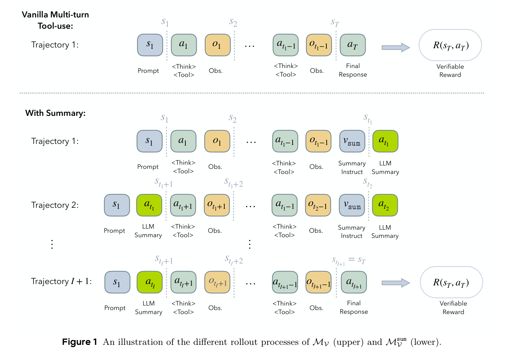
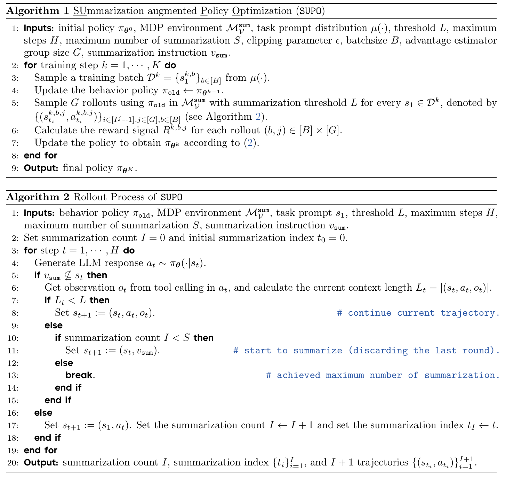
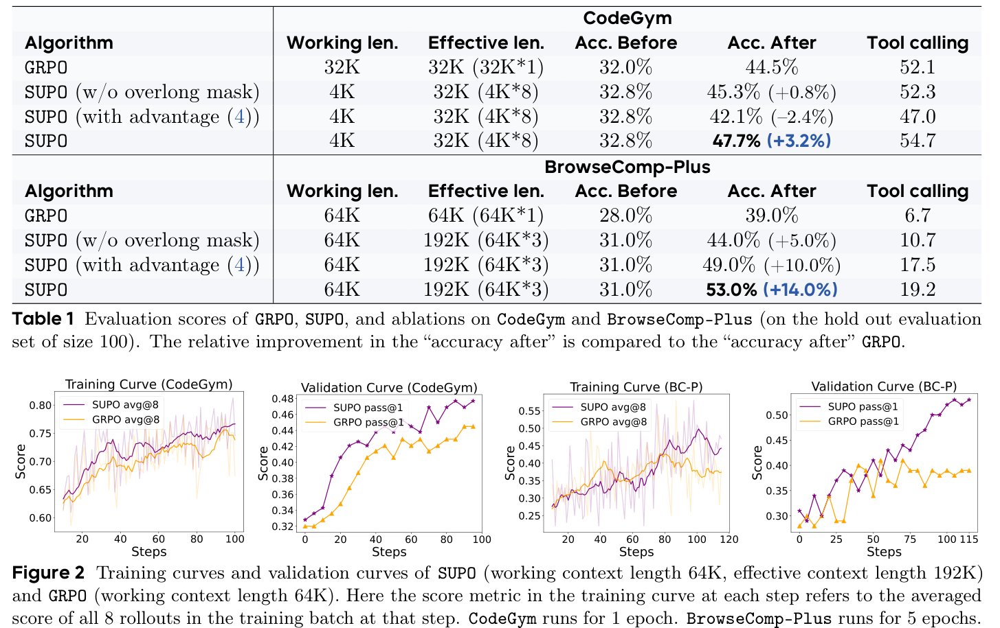
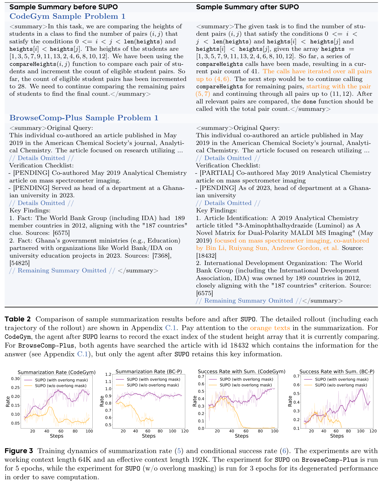
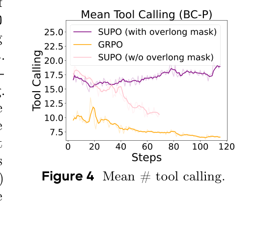
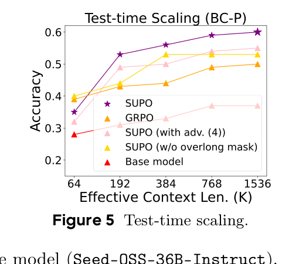

2025-10-08
《Scaling LLM Multi-turn RL with End-to-end Summarization-based Context Management》中文解读报告
让 multi-turn RL agent 学会周期性生成 task-relevant summaries，在固定 context window 内训练和执行更长 horizon 的工具调用任务。
1. 基本信息
- 论文：Scaling LLM Multi-turn RL with End-to-end Summarization-based Context Management
- 简称：SUPO, SUmmarization augmented Policy Optimization
- 作者：Miao Lu, Weiwei Sun, Weihua Du, Zhan Ling, Xuesong Yao, Kang Liu, Jiecao Chen
- 机构：ByteDance Seed, Stanford University, Carnegie Mellon University
- 版本：arXiv:2510.06727v1, 2025-10-08；论文内日期为 2025-09-30
- 主论文 PDF：
2510.06727v1.pdf - 主题关键词：LLM agent, multi-turn RL, tool use, context management, summarization, GRPO, RLVR, long-horizon agent
2. 一句话总结
这篇论文的核心思想是：不要让长程工具调用轨迹无限堆进同一个上下文，而是在 RL 训练过程中让模型自己周期性生成任务相关摘要，并把这些摘要也作为策略的一部分端到端优化；这样 LLM agent 可以在固定工作上下文窗口内训练和执行更长 horizon 的任务。
3. 背景与问题
LLM agent 做复杂任务时，常见模式是 ReAct 式的多轮循环：模型思考、调用工具、拿到 observation、继续思考，再调用工具，最后提交答案。这个过程天然适合用 MDP 建模，也适合用 RLVR/GRPO/PPO 这类强化学习方法训练，因为最终答案是否正确通常可以被规则或环境验证。
问题在于，长程任务会不断累积 prompt、模型输出、工具返回、推理轨迹。论文指出这带来三个训练瓶颈：
- 长上下文下模型指令跟随和推理能力下降。即使模型标称支持长窗口，也不等于它能稳定利用完整历史。
- rollout 成本膨胀。每一步都带着越来越长的上下文生成，训练吞吐会急剧下降。
- 固定 context limit 限制可训练 horizon。任务如果需要比一个窗口更多的工具调用，普通 multi-turn RL 就无法真正训练到完整解题过程。
作者的判断是：扩模型上下文窗口不是唯一解，也不一定是训练 LLM agent 的最经济路径。更直接的办法是把“上下文管理”变成 agent policy 的一部分，让模型学会保存关键信息、丢弃无关细节。
4. 核心贡献
论文有三层贡献：
- 提出 summarization-augmented MDP。普通 MDP 的状态是完整历史；SUPO 在状态转移里加入 summary trigger。当上下文超过阈值后，模型生成摘要，下一段轨迹从“初始 prompt + 上一段摘要”继续，而不是带着全部历史继续。
- 推导对应的 policy gradient。关键结论是，一个超长 rollout 可以拆成若干个以摘要衔接的子 trajectory，每段 trajectory 的 token log-prob 梯度加起来仍然对应原始 summarization MDP 的策略梯度。这使它能接入已有 GRPO/PPO 类基础设施。
- 给出算法实例 SUPO。它在 GRPO 风格目标上加入 trajectory 管理、rollout 级 advantage 估计、overlong masking，并在 CodeGym 与 BrowseComp-Plus 上展示比 vanilla GRPO 更好的成功率和工具调用能力。
5. 方法详解
5.1 标准 multi-turn tool-use MDP
普通建模中，状态 s_t 是截至第 t 轮之前的完整 token 序列，包括初始 prompt、模型历史输出、工具 observation。动作 a_t 是模型本轮输出，通常包括 reasoning 和 tool call。环境执行工具后返回 o_t，状态变成 (s_t, a_t, o_t)。最终 reward 是规则验证的 0/1 奖励。
这个建模的问题是状态长度单调增长。模型越接近完成任务，输入越长；训练越长程，越容易撞到上下文窗口。
5.2 Summarization-based context management
SUPO 把一个特殊摘要指令 v_sum 放入决策过程。设摘要阈值为 L：
- 如果当前上下文还没超过阈值，就继续普通工具调用。
- 如果超过阈值，就触发一次摘要，让模型根据当前历史生成 summary。
- 摘要完成后，下一段上下文重置为“原始任务 prompt + summary”。

上图最直观地展示了 SUPO 的核心变化：普通 multi-turn tool-use 把所有动作和 observation 串成一条越来越长的轨迹；summary 版本则把长轨迹切成多段，每段末尾生成摘要，下一段只继承原始 prompt 和上一段摘要。
这意味着模型不再依赖完整历史，而是依赖压缩后的任务状态。摘要不是外部规则写死的，也不是另一个固定 summarizer 生成的，而是由同一个 LLM policy 生成，因此 RL 奖励会反过来塑造摘要策略：如果摘要漏掉关键中间变量、搜索线索或验证 checklist，后续答错，整条 rollout 奖励就低；如果摘要保留了下一段解题需要的信息，就能得到高奖励。
论文给了一个工作上下文长度上界：在 summarization MDP 下，工作上下文长度可以被阈值、单次动作最大长度、工具 observation 最大长度和摘要指令长度控制。这是“可训练 beyond fixed context limit”的形式化基础。
5.3 策略梯度为何可拆
Theorem 3.2 是论文最重要的理论点。直观理解如下：
一条完整 rollout 可能长成：
prompt -> 工具调用若干轮 -> summary_1
prompt + summary_1 -> 工具调用若干轮 -> summary_2
prompt + summary_2 -> 工具调用若干轮 -> final answer在普通 RL 中，策略梯度是 reward 乘以所有动作 log-prob 的梯度和。SUPO 的摘要步骤也是由同一个策略生成的动作，所以它也有 log-prob 梯度。作者证明：按摘要边界把长 rollout 切成 I+1 段，每段内部的工具调用 token 和段尾摘要 token 都可以作为该段 trajectory 的训练 token，最后共享同一个 rollout reward。这样做不需要重新发明 RL 框架，只要把一个超长 rollout 整理成多个可被现有基础设施处理的短 trajectory。
这一点很实用。许多 RLHF/RLVR 系统已经支持“一个 prompt 采样 G 个 rollout、计算 group-relative advantage、按 token 更新”的流程。SUPO 的改动主要发生在 rollout 管理和 advantage 组织上。
5.4 SUPO 算法实现细节
SUPO 基于 GRPO 风格目标，关键实现有三点。
第一，trajectory management。一次 rollout 可能产生多段 trajectory。每段 trajectory 以前一段摘要为起点，段尾可能是当前段摘要。训练时把这些段摊平成一批 trajectory；为了兼容 mini-batch，实现上还可以 padding dummy trajectory，dummy token mask 为 0，不影响更新。
第二，advantage estimation。作者没有按“每个子 trajectory”独立算 advantage，而是按原始 rollout group 算。也就是说，同一个 prompt 采样的 G 条 rollout 中，每条 rollout 根据最终 reward 相对 group 均值/方差得到 advantage；该 rollout 被切出的所有子 trajectory 共享这个 advantage。作者认为这更能鼓励“长且成功”的 rollout，因为按子 trajectory 重复计数会稀释长成功轨迹的相对优势。
第三，overlong masking。若 rollout 到达最大步数 H 或最大摘要次数 S 仍未给出 final answer，则 mask 掉。这个设计看似普通，但论文实验显示非常关键：没有 overlong mask 时，模型会倾向于避免触发摘要，更多 rollout 退化成单段完成，摘要模式坍塌；这违背了通过摘要扩展有效上下文的初衷。
另一个工程细节是 fine control of context length。实际 rollout 中，一旦检测到 (s_t, a_t, o_t) 超过阈值，算法会在进入摘要状态时丢弃最后一轮 action-observation pair，以避免一次很长的 observation 让摘要本身被训练 context 截断。

算法图可以按两层读：Algorithm 1 是训练外循环，每个 prompt 采样 G 条 rollout、算 reward、更新 policy；Algorithm 2 是 SUPO 真正区别于 GRPO 的地方，它在 rollout 中检查上下文长度，超过阈值时插入摘要指令，摘要完成后把状态重置为 s1 + summary。
6. 实验设计与结果
6.1 任务与数据
论文用了两个环境：
- CodeGym：把代码题改造成交互式函数调用环境。模型不能直接写代码求解，而要调用
observe()、done()以及题目相关函数逐步完成任务。作者使用 12,800 个训练问题，构造 128 个更长、更难、seed 不同的 evaluation set。 - BrowseComp-Plus：深度搜索任务。工具包括
search(query, top_k)、open_page(url)、finish()。作者从 830 个问题中划出 100 个作为评估集，其余 730 个作为训练数据，并使用 Qwen3-Embedding-8B 作为 retriever。作者明确说明这里是方法演示，不声称可与公开 BrowseComp 分数直接比较。
模型方面，CodeGym 使用 Qwen2.5-32B-Instruct，BrowseComp-Plus 使用 Seed-OSS-36B-Instruct。
6.2 主结果
Table 1 的结果很清楚：
| 任务 | 方法 | 工作上下文 | 有效上下文 | 训练后准确率 | 工具调用 |
|---|---|---|---|---|---|
| CodeGym | GRPO | 32K | 32K | 44.5% | 52.1 |
| CodeGym | SUPO | 4K | 32K | 47.7% | 54.7 |
| BrowseComp-Plus | GRPO | 64K | 64K | 39.0% | 6.7 |
| BrowseComp-Plus | SUPO | 64K | 192K | 53.0% | 19.2 |
CodeGym 上，SUPO 用 4K 工作上下文和最多 8 段摘要轨迹，达到与 GRPO 相同的 32K 有效上下文，但准确率从 44.5% 提升到 47.7%。这说明即使不扩大有效上下文，摘要式状态管理也可能提升长程任务连续性。
BrowseComp-Plus 上，SUPO 的优势更明显：工作上下文同为 64K，但允许最多 3 段 trajectory，有效上下文 192K，准确率从 GRPO 的 39.0% 提升到 53.0%，平均工具调用从 6.7 提升到 19.2。这个任务需要反复搜索、打开网页、保留线索，因此更能体现“摘要保留关键证据”的价值。

这张图里最值得看的是 BrowseComp-Plus 的行：SUPO 的最终准确率和工具调用次数都明显高于 GRPO，说明它不是靠更保守地少搜来提高稳定性，而是能支持更多轮搜索并把中间线索传递下去。
6.3 消融实验
论文消融了两个组件。
第一，去掉 overlong mask。CodeGym 上结果仍略高于 GRPO，但 BrowseComp-Plus 上明显低于完整 SUPO。Figure 3 和 Figure 4 显示，不加 overlong mask 时，摘要率与“带摘要 rollout 的成功率”会退化，工具调用数量也快速下降。这说明模型可能学到一种捷径：少做长程探索，避免被长轨迹惩罚。
第二，把 advantage 改成按 trajectory group 计算，而不是 rollout group。CodeGym 上降到 42.1%，BrowseComp-Plus 上为 49.0%，都低于完整 SUPO。作者的解释是：若按切分后的子 trajectory 计数，长成功 rollout 的 reward 会被重复纳入均值，削弱它相对 group 的优势信号，不利于学习多段摘要后的成功行为。
6.4 摘要质量变化
Table 2 的样例很有说服力。CodeGym 中，训练前摘要只记录“当前 count=28，需要继续比较”，但没有记录比较到了哪个 index；训练后摘要记录“当前 pair count=41，已比较到 (4,6)，下一步从 (5,7) 继续”。这类状态变量正是下一段 trajectory 能否接上任务的关键。
BrowseComp-Plus 中，训练前后都搜到过包含答案线索的文档，但训练后摘要保留了关键文章标题、作者名、组织线索，训练前摘要则更像泛泛 checklist。这说明 SUPO 优化的不是“摘要更短”本身，而是“摘要对后续决策有用”。

Table 2 是理解 SUPO 的关键证据：训练后的摘要会记录“下一段真正需要恢复的状态”，例如 CodeGym 的当前比较 index，或 BrowseComp-Plus 中已经找到的文章标题和候选作者。Figure 3 则显示 overlong mask 能防止摘要行为坍塌。

Figure 4 说明 SUPO 在搜索任务中会维持更高工具调用次数；这与最终准确率提升相互印证，因为 BrowseComp-Plus 往往需要多步检索和验证。
6.5 Test-time scaling
论文还问了一个重要问题：训练时最多摘要 S=2，测试时能否把摘要轮数扩得更大？在 BrowseComp-Plus 上，作者评估 S in {1,2,5,11,23}，对应更长 effective context。结果显示，即便未经过端到端摘要训练，测试时使用摘要管理也可能提升准确率；但完整 SUPO 在扩大摘要轮数后达到最高 60.0%。这暗示模型学到的摘要策略具有一定可外推性：训练学会“如何压缩搜索进展”，测试时可以用更多段完成更难问题。

Figure 5 的读法是横轴有效上下文从 64K 扩到 1536K，纵轴是准确率。完整 SUPO 曲线最高，说明经过端到端摘要训练后，模型在测试时增加摘要轮数仍能受益。
7. 相关论文脉络
本阅读包下载了 6 篇相关论文，放在 related/ 目录。
7.1 CodeGym
文件：related/2509.17325_codegym.pdf
这篇论文提供 SUPO 的一个实验环境。CodeGym 的价值在于把静态代码题转成可验证的交互式工具调用任务，让 RL agent 通过调用函数逐步求解，而不是直接生成完整代码。它让 SUPO 可以测试“长程、多轮、可验证、需要保持中间状态”的工具使用能力。理解 CodeGym 后，才能看懂为什么 SUPO 样例里“比较学生身高 pair count 和当前 index”是关键摘要内容。
7.2 BrowseComp-Plus
文件：related/2508.06600_browsecomp_plus.pdf
这是 SUPO 的另一个实验环境，也是更接近真实 deep research agent 的任务。BrowseComp-Plus 试图解决 live web benchmark 的公平性和可复现性问题：固定语料、提供人工验证支持文档和困难负例，使不同 agent/retriever 可以在同一环境中比较。SUPO 在这个任务上提升最大，因为搜索任务的失败常常不是“不会搜”，而是“搜到线索后没有保留、没有跨轮整合”。
7.3 R1-Searcher
文件：related/2503.05592_r1_searcher.pdf
R1-Searcher 代表“用 RL 激励 LLM 自主调用搜索工具”的路线。它关注的是如何让模型在知识密集问题中决定何时搜索、如何搜索、如何结合外部知识回答。SUPO 与它的关系是互补：R1-Searcher 更强调搜索行为本身，SUPO 更强调搜索历史变长之后如何压缩和延续上下文。对 BrowseComp-Plus 这类任务，两者其实解决同一 agent pipeline 的不同瓶颈。
7.4 MemAgent
文件：related/2507.02259_memagent.pdf
MemAgent 也使用 RL 训练记忆/摘要式机制，核心场景是超长文档问答：模型分段阅读文本，并用 overwrite strategy 更新 working memory。SUPO 在相关工作中指出，MemAgent 可看作 SUPO 框架的特殊情形：交互不是搜索或工具环境，而是按 chunk 读文档；summary/memory 是过去阅读内容的压缩。SUPO 的泛化点在于把这个思想推广到更一般的多轮工具使用 MDP。
7.5 MEM1
文件：related/2506.15841_mem1.pdf
MEM1 训练 agent 在长程多轮任务中维护 constant-size internal state。每轮把旧 internal state、新 observation、推理需要整合成新 internal state，从而避免 full-context prompting 的无界增长。它和 SUPO 都是端到端 RL 训练“压缩历史”的方法。差异是，MEM1 更强调每轮持续更新一个紧凑内部状态，SUPO 更强调当上下文超过阈值时触发摘要，并从 policy gradient 上说明如何把长 rollout 切成可训练短段。
7.6 Memory-R1
文件：related/2508.19828_memory_r1.pdf
Memory-R1 走的是外部 memory bank 路线：Memory Manager 学 ADD/UPDATE/DELETE/NOOP，Answer Agent 检索并利用记忆回答。它解决的是“长期记忆如何结构化管理”，而 SUPO 解决的是“当前工作上下文如何压缩成可继续决策的摘要”。两者可以结合：SUPO 的 summary 可以作为写入外部 memory 的候选内容，Memory-R1 的 memory operation 可以为 SUPO 提供更细粒度的持久化记忆控制。
8. 论文的价值
这篇论文最大的价值不是“用摘要节省 token”这个表层想法，而是把摘要纳入 RL agent 的可优化行为。传统 context compression 常常是启发式的：固定 prompt、固定 summarizer、固定压缩策略。SUPO 的态度是：摘要好不好，应由任务成功奖励决定。
对工程系统也有启发：如果一个 agent 系统需要长程搜索、长程代码修复、长程 GUI 操作或长程数据分析，不应只依赖无限追加历史。更稳妥的做法是让系统周期性产生结构化状态摘要，并把摘要质量纳入训练或评估闭环。
9. 局限与风险
- 摘要错误会被放大。摘要一旦丢掉关键事实，后续 trajectory 可能无法恢复。论文展示训练能改善摘要质量，但没有完全解决“错误摘要不可逆”的问题。
- reward 稀疏。最终 0/1 reward 同时训练工具使用和摘要策略，credit assignment 仍然粗糙。作者也把 critic/token-level advantage 作为未来工作。
- 实验范围有限。CodeGym 是合成环境，BrowseComp-Plus 使用了固定划分和固定 retriever；结果说明方向有效，但不能直接推出所有真实浏览器/软件工程 agent 都能同等收益。
- 摘要触发策略较简单。当前主要由长度阈值触发，尚未学习“什么时候应该总结、总结成什么格式、是否需要多种 memory 类型”。
- 训练成本没有充分展开。SUPO 让单段工作上下文更短，但多段 rollout、摘要生成、更多工具调用也会带来额外成本；论文主要报告成功率和工具调用，没有完整成本收益曲线。
10. 复现与落地建议
如果要复现或借鉴 SUPO，可以按以下优先级拆解：
- 先实现 rollout 切分：当上下文超过阈值时插入 summary prompt，summary 后重置为
initial prompt + summary。 - 保证训练数据结构能表达“一条原始 rollout -> 多条子 trajectory -> 同一个最终 reward”。
- advantage 先按 rollout group 计算，不要急着按子 trajectory 计算。
- 对未在最大步数/最大摘要次数内结束的 rollout 做 mask，避免训练信号惩罚长程探索。
- 摘要 prompt 要任务定制。CodeGym 需要保留变量状态、当前循环位置、下一步；搜索任务需要保留 checklist、已验证事实、source id、dead ends、下一步查询计划。
- 评估时不要只看准确率，也要看摘要率、带摘要 rollout 的成功率、平均工具调用、平均工作上下文长度和摘要错误类型。
11. 术语表
- working context length：模型单次生成时实际可见的上下文窗口。
- effective context length：通过多次摘要串接后，理论上能覆盖的历史规模，论文定义为
L_RL * (S + 1)。 - summarization threshold：触发摘要的上下文长度阈值。
- rollout：从初始 prompt 到最终答案的一次完整交互过程。
- trajectory：在 SUPO 中，一个 rollout 可被摘要边界切成多段 trajectory。
- overlong mask：对超出最大步数或摘要次数仍未完成的 rollout 屏蔽训练损失。
- group-relative advantage：GRPO 风格的相对优势估计，通常在同一 prompt 的多个 rollout 之间标准化 reward。
13. 参考来源
- 主论文：https://arxiv.org/abs/2510.06727v1
- CodeGym：https://arxiv.org/abs/2509.17325
- BrowseComp-Plus：https://arxiv.org/abs/2508.06600
- R1-Searcher：https://arxiv.org/abs/2503.05592
- MemAgent：https://arxiv.org/abs/2507.02259
- MEM1：https://arxiv.org/abs/2506.15841
- Memory-R1：https://arxiv.org/abs/2508.19828